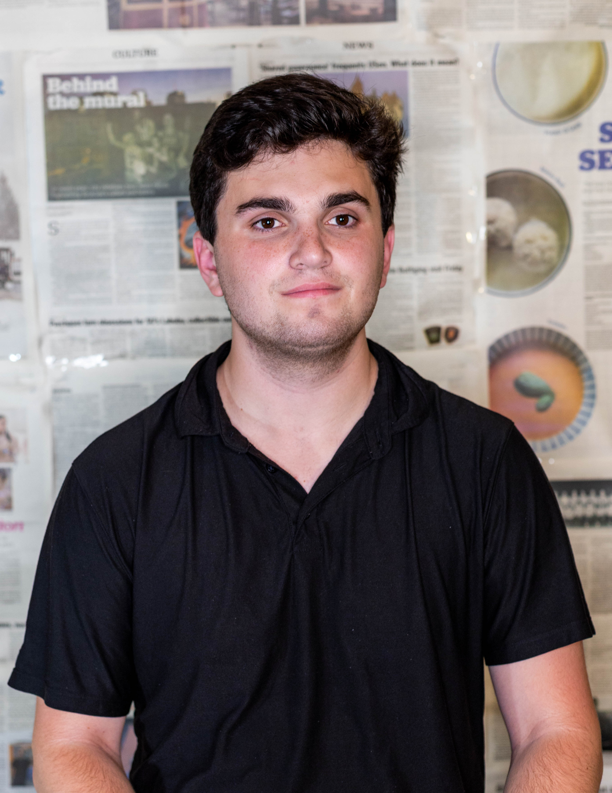

Hi! I’m Spencer Brod, a magazine, news and digital journalism major at the S.I. Newhouse School of Communications at Syracuse University. I was born and raised in New York City, where the electrifying sports scene led to my journalism passion. Now, as an Assistant Sports Editor and Women’s Basketball Beat Writer at The Daily Orange, I’m telling stories of Division I athletes and helping younger writers find their voice.
My three favorite things about Syracuse:
